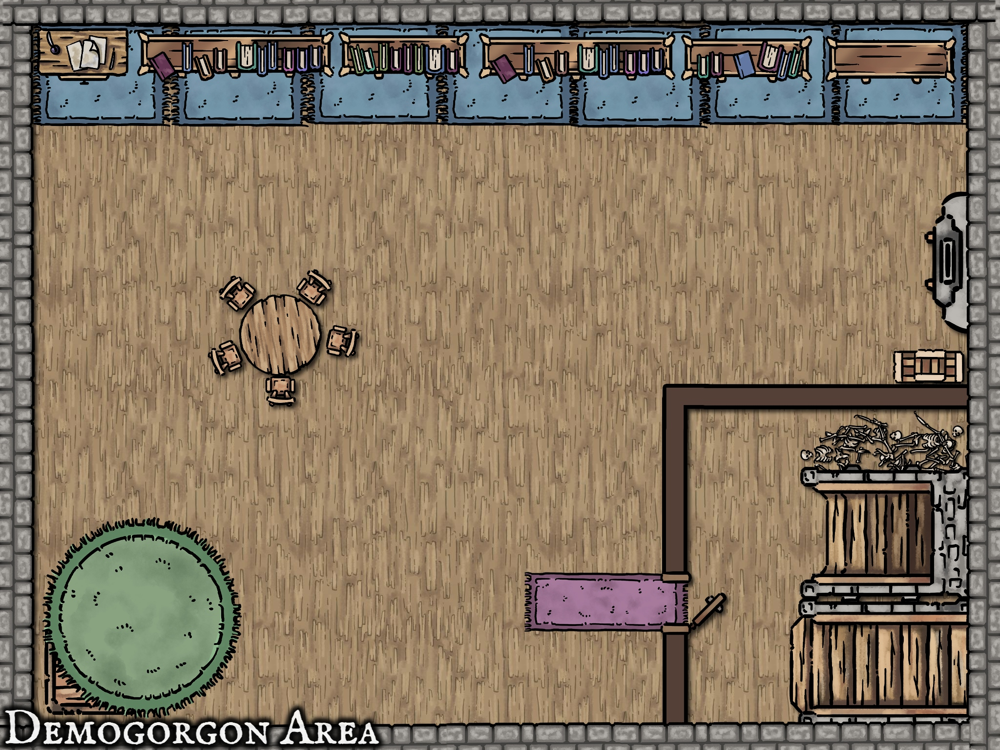
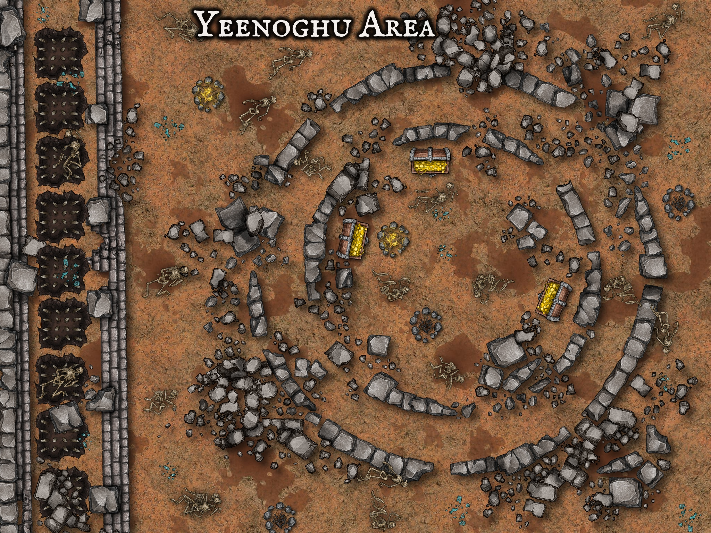
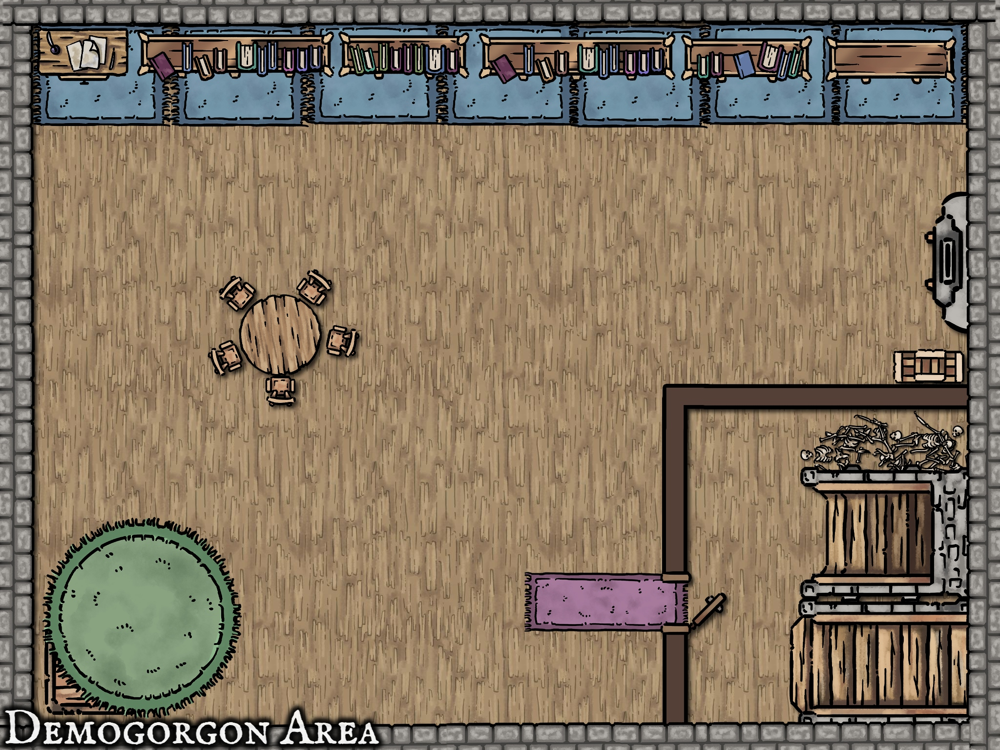
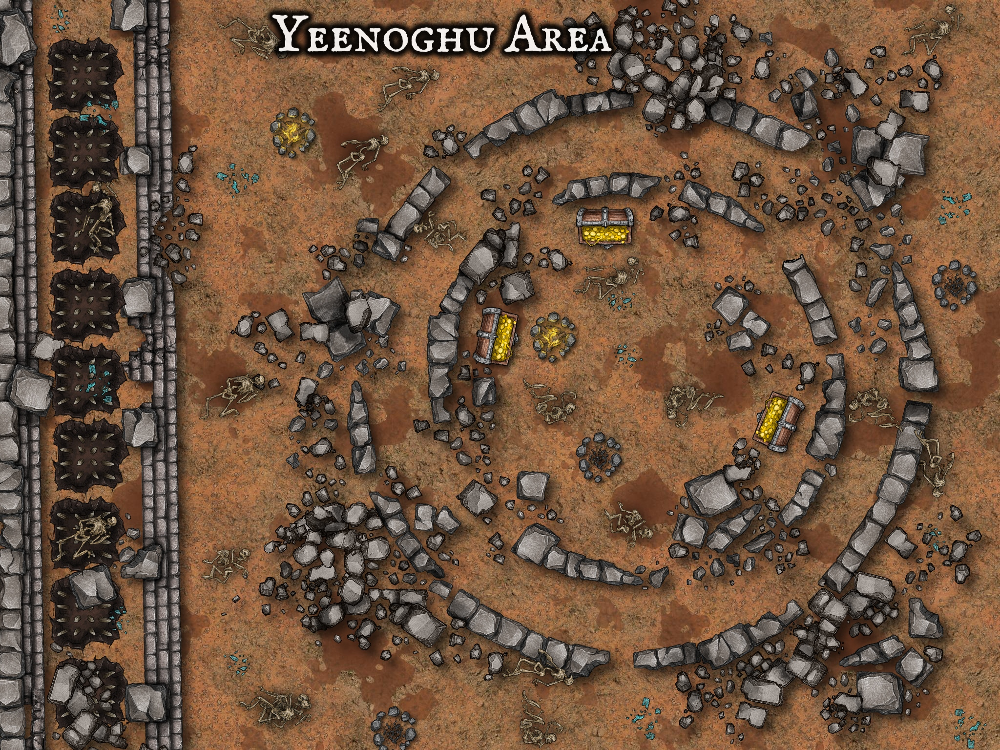

Over the course of this semester not only did I have a great time, I was able to learn and grow as a creator. The semester started out strong learning about different kinds of board games and how they are made. As well as the process of how they are thought up which determines what kind of board game it is. We were tasked with three main projects throughout the semester. The first being a board game that is more mechanics focused rather than more story based.
For each project about five students provide pitches of game ideas. I personally did not pitch for this and really enjoyed all of the pitches. The one I was most drawed too was a pitch called Crab Bucket. It was simple, straightforward, but also silly and fun. Crab bucket in its early stages is a fun fast paced board game where each player is a crab trying to escape a bucket.

Here is the original board with our note card playing cards and drawn crabs.
For project two I decidede to throw out a pitch since I am more comfortable with story oriented media. My pitch was a fallout themed choose your own adventure card game.
I had a blast creating this game, and I now have a profound appreciation for choose your own adventure creators. There was a lot more writing than I thought there would be, but being able to create this world and these characters was very fufilling.

Here is an image of our mindmap. We decided to have a more visiual media for when writing everything. It was a good call being able to visually see the links between different cards.
For the third project we all were given multiple options on how we would like to take it. The first being a new game that has a good balance of mechanics and story. The second being go back to one of our previous two games and add either more story or more mechanics. Since my group from Crab Bucket worked so well together and we were already quite proud of our game we decided to come back together and polish our game adding more story and tweaking already known mechanics.
We were informed at the beginning of the semester that we could choose one of the games we were apart of to have professionally printed from an outside source named the Game Crafter. I chose Crab Bucket, since I have been working on it a good chunk of this semester. With that being said since we are having it professionally made we needed digital assests for Crab Bucket. I have been in conjunction with Collin Brooks to make our digital assets. While Sam Good and Adien Demonte worked hard on making sure all of our mechanics were clear and precise, also creating many different endings, depending on who wins the game.


Here are just a few of the assets I have created so far. I created the basic tokens as well as the backs of the cards.
Game Design 2
Here are some maps I created for my game deisgn 2 course. This set of maps are for an old Dungeons and Dragons campaign I was a player in. This assignment was based on creating a space for an existing medium.

.jpg) 




Here are some maps I created for my game deisgn 2 course. This set of maps are for a DLC that I thought up for the game Baldur's Gate 3. This assignment was based on creating a space for creating a new space for a new or existing medium.